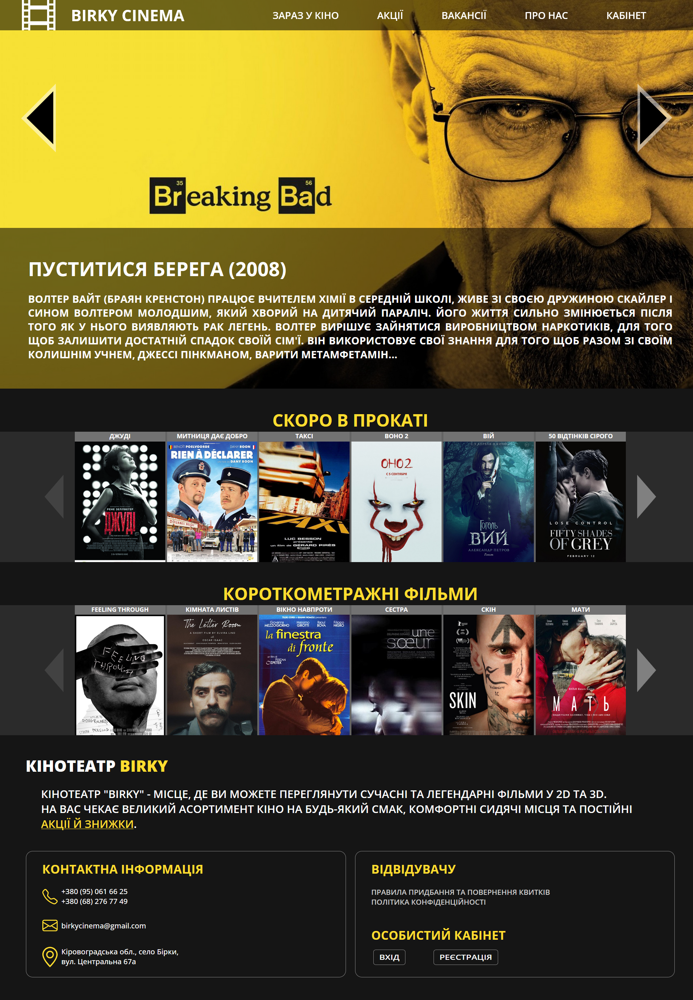

ПОСТАНОВКА ЗАДАЧІ
Лабораторної роботи №5
Тема: ВИКОРИСТАННЯ В СЦЕНАРІЯХ JAVASCRIPT БІБЛІОТЕК КРОС-БРАУЗЕРНИХ ІНТЕРФЕЙСІВ МЕТОДІВ DOM. БІБЛІОТЕКА JQUERY UI.
ЗАСОБИ НАЛАГОДЖЕННЯ І ТЕСТУВАННЯ СЦЕНАРІЇВ JAVASCRIPT.
Мета:
придбати практичні навички роботи jQuery UI, вміти додавати до сайту динамічні елементи цієї бібліотеки,
плагін галереї UniteGallery, кнопки соціальних мереж, інформери та інше.
ХІД ВИКОНАННЯ РОБОТИ
- Ознайомитися з теоретичними відомостями до лабораторної роботи №5 ( бібліотека jQuery UI). Теоретичні відомості надані у даному файлі стор.6 (прогорнути)
- Відкрити власний сайт або створити окремо WEB-сторінку, якщо елементи не заплановано використовувати у власній програмі (сайті).
-
Користуючись документацією бібліотеки https://jqueryui.com/ додати до сайту (або до окремої сторінки) 2-3 динамічних елементи,
що наведені в переліку:
- Accordion - набір елементів, що розгортаються/згортаються.
- Datepicker - вибір дати з календаря.
- Menu – випадне меню.
- Slider - вибір числа за допомогою повзунка.
- Tabs - організація вкладок на сторінці.
- Tooltip - організація спливаючих підказок.
- фотогалерею з можливістю перегляду збільшених зображень
- слайдер фотографій
- слайдер відеоматеріалів
- Додати до сайту (або до окремої сторінки) кнопки соціальних мереж: Facebook, Twitter, Instagram, Pinterest.
-
Додати сайту (або до окремої на сторінці) інформери:
- Погода у Києві (або у іншому місті)
- Курс валют
- Годинник
- Додати сайту (або до окремої на сторінці) один (або більше) із модулів jQuery для мультимедіа (зображення і відео). Список модулів дивитись в теоретичних відомостях.
- У звітному HTML-документі оформити звіт лабораторної роботи №5
Місцезнаходження результатів роботи:
Головна сторінка сайту кінотеатру «Birky»
Скріншот:
